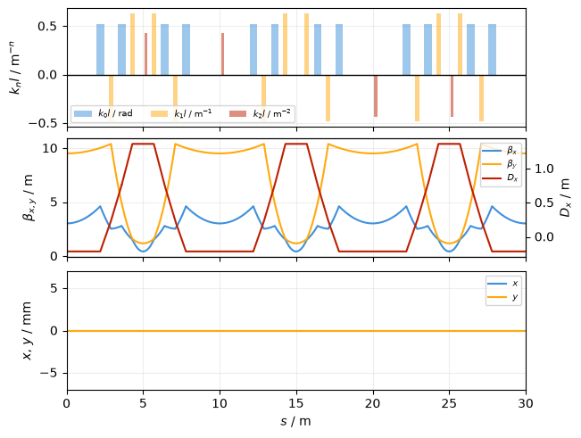
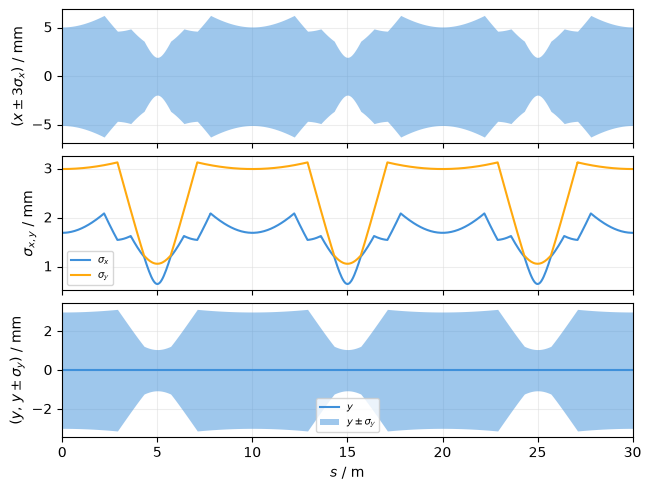
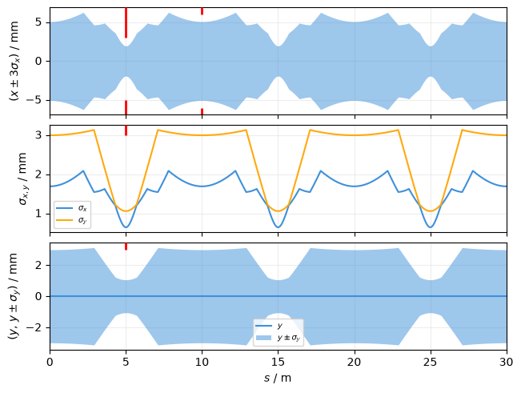
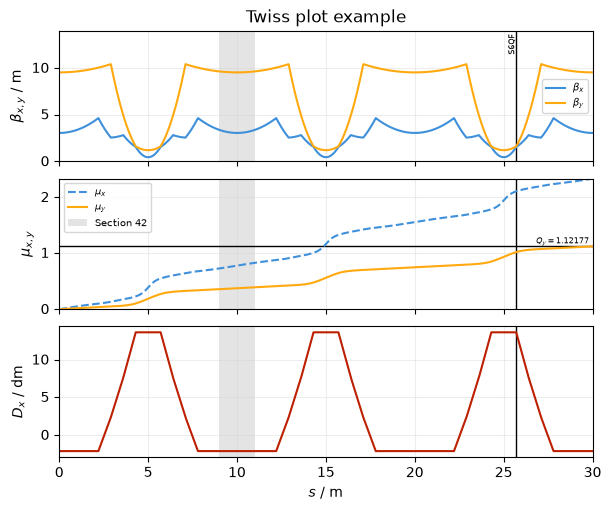

Twiss#
This is an example of plotting lines and twiss results. First, create a simple line and a tracker:
Then determine it’s twiss parameters. Use the at_s parameter to get the twiss data with high resolution as a function of s (rather than at each element only).
snip = line.copy(shallow=True)
snip.cut_at_s(np.linspace(0, line.get_length(), 500, endpoint=False))
tw = snip.twiss(method="4d")
Default twiss plot#
Create a default TwissPlot (passing line to the plot adds a beamline plot to the top):
plot = xplt.TwissPlot(tw, line=line)
plot.axis("x").set(ylim=(-7, 7));

Beam size plot#
You can also plot the beam size and envelope:
# Normalized emittance in m*rad
cv = tw.get_beam_covariance(nemitt_x=1e-6, nemitt_y=1e-6)
plot = xplt.TwissPlot((tw, cv), "envelope3_x, sigma, y + envelope_y")

Apertures#
You can also plot apertures onto the existing plot:
ap = xplt.util.apertures(line)
xd.Table(ap, index="s").to_pandas()
| s | min_x | max_x | min_y | max_y | |
|---|---|---|---|---|---|
| 0 | 5.0 | -0.005 | 0.003 | -1.000000e+10 | 0.003 |
| 1 | 10.0 | -0.006 | 0.006 | -1.000000e+00 | 1.000 |
plot.plot_apertures(ap, lw=2, color="r")
plot.fig

Customisation#
Use the parameter kind to specify what is plotted. This is a string specifying the properties to be plotted, separated by , for each subplot. Use a+b to plot multiple properties on an axis and a-b to separate left and right axis. See TwissPlot for details.
A list with all supported properties can be found in Common concepts under Default properties and Twiss plot.
Tip
Use prefix notation as shorthand to plot both x- and y-properties, e.g. bet for betx+bety
plot = xplt.TwissPlot(
tw,
kind="bet,mux+muy,dx", # 3 subplots: plot beta functions ("bet"="betx+bety") on the first,
# phase advances on the second, and dispersion on the third
display_units=dict(d="dm"), # dispersion in deci-meter ("d=" for "dx" and "dy")
figsize=(6, 5),
)
# add some annotations
plot.axline("s", line.get_table()["s", "S6QF"], annotation="S6QF")
plot.axspan("s", 9, 11, label="Section 42")
plot.axline("muy", tw.qy, annotation=f"$Q_y={tw.qy:g}$", annotation_loc=1)
# adjust some axes
plot.axis(0).set(title="Twiss plot example", ylim=(0, 14))
plot.axis("mux").set(ylim=(0, tw.qx))
# adjust line layout
plot.artist("mux").set(ls="--")
plot.artist(subplot=2).set(c="pet2")
# legend is shown by default for subplots with more than 1 trace
plot.legend(1, loc="upper left") # call it manually to reflect updated line layout
# plot.legend() # uncomment this to show legends on all subplots

See also